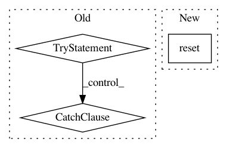

342447bf56290c05466d0eca5f50c6fdee35e045,polyaxon_cli/cli/version.py,,check_cli_version,#,44
Before Change
Check if the current cli version satisfies the server requirements
if not CliConfigManager.should_check():
return
try:
server_version = PolyaxonClients().version.get_cli_version()
except AuthorizationError:
session_expired()
sys.exit(1)
except (PolyaxonHTTPError, PolyaxonShouldExitError) as e:
Printer.print_error("Could not get cli version.")
Printer.print_error("Error message `{}`.".format(e))
sys.exit(1)
current_version = pkg_resources.get_distribution(PROJECT_CLI_NAME).version
if LooseVersion(current_version) < LooseVersion(server_version.min_version):
click.echo(Your version of CLI ({}) is no longer compatible with server..format(
current_version))
After Change
server_version = get_server_version()
current_version = get_current_version()
CliConfigManager.reset(current_version=current_version,
min_version=server_version.min_version)
if LooseVersion(current_version) < LooseVersion(server_version.min_version):
click.echo(Your version of CLI ({}) is no longer compatible with server..format(
current_version))
In pattern: SUPERPATTERN
Frequency: 3
Non-data size: 3
Instances
Project Name: polyaxon/polyaxon
Commit Name: 342447bf56290c05466d0eca5f50c6fdee35e045
Time: 2018-04-27
Author: mouradmourafiq@gmail.com
File Name: polyaxon_cli/cli/version.py
Class Name:
Method Name: check_cli_version
Project Name: catalyst-team/catalyst
Commit Name: b1d71998e8dad7604a3eb3ff0279fb275b8ae7e2
Time: 2019-11-03
Author: 34604336+jchen42703@users.noreply.github.com
File Name: catalyst/dl/tests/test_ppv_tpr_f1.py
Class Name:
Method Name: test_meter